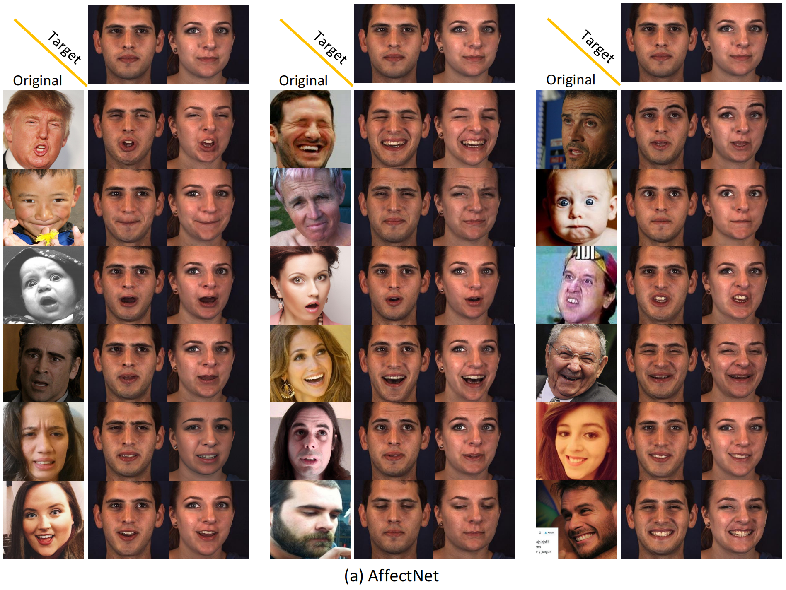
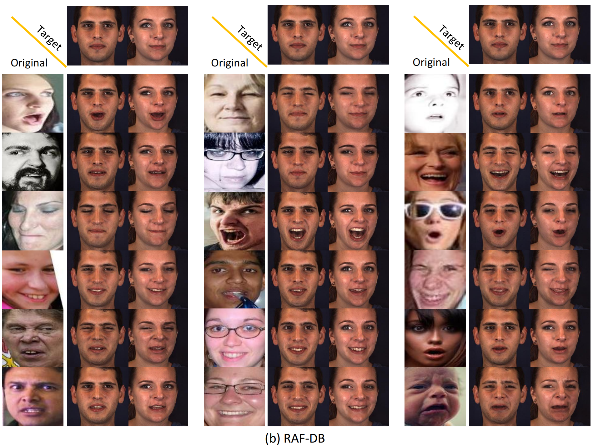
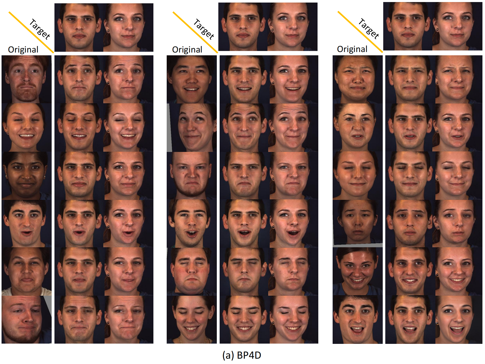
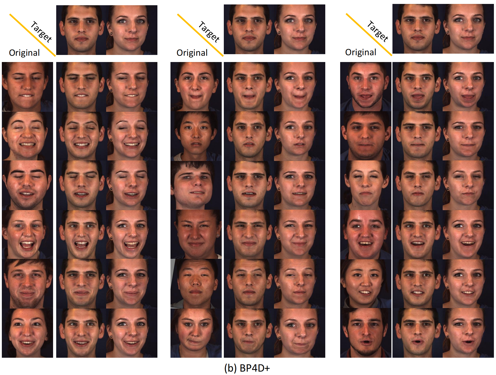

Norface for different datasets
AffectNet
RAF-DB
BP4D
BP4D+
DISFA

Facial Expression Analysis (FEA) remains a challenging task due to unexpected task-irrelevant noise, such as identity, head pose, and background.
To address this issue, we proposes a novel framework, called Norface, that is unified for both Action Unit (AU) analysis and Facial Emotion Recognition (FER) tasks. Norface consists of a normalization network and a classification network. First, the carefully designed normalization network struggles to directly remove the above task-irrelevant noise, by maintaining facial expression consistency but normalizing all original images to a common identity with consistent pose, and background. Then, these additional normalized images are fed into the classification network. Due to consistent identity and other factors (e.g. head pose, background, etc.), the normalized images enable the classification network to extract useful expression information more effectively. Additionally, the classification network incorporates a Mixture of Experts to refine the latent representation, including handling the input of facial representations and the output of multiple (AU or emotion) labels.
Extensive experiments validate the carefully designed framework with the insight of identity normalization. The proposed method outperforms existing SOTA methods in multiple facial expression analysis tasks, including AU detection, AU intensity estimation, and FER tasks, as well as their cross-dataset tasks.
We can also animate the scene by interpolating the deformation latent codes of two input frames. Use the slider here to linearly interpolate between the left frame and the right frame.

Start Frame

End Frame
We show several original images that have been normalized to multiple target identities while maintaining consistency in facial expressions.

There's a lot of excellent work that was introduced around the same time as ours.
Progressive Encoding for Neural Optimization introduces an idea similar to our windowed position encoding for coarse-to-fine optimization.
D-NeRF and NR-NeRF both use deformation fields to model non-rigid scenes.
Some works model videos with a NeRF by directly modulating the density, such as Video-NeRF, NSFF, and DyNeRF
There are probably many more by the time you are reading this. Check out Frank Dellart's survey on recent NeRF papers, and Yen-Chen Lin's curated list of NeRF papers.
@article{Hanwei2024Norface,
author = {Hanwei Liu, Rudong An, Zhimeng Zhang, Bowen Ma, Wei Zhang, Yan Song, Yujing Hu, Wei Chen, and Yu Ding},
title = {Norface: Improving Facial Expression Analysis by Identity Normalization},
journal = {ECCV},
year = {2024},
}